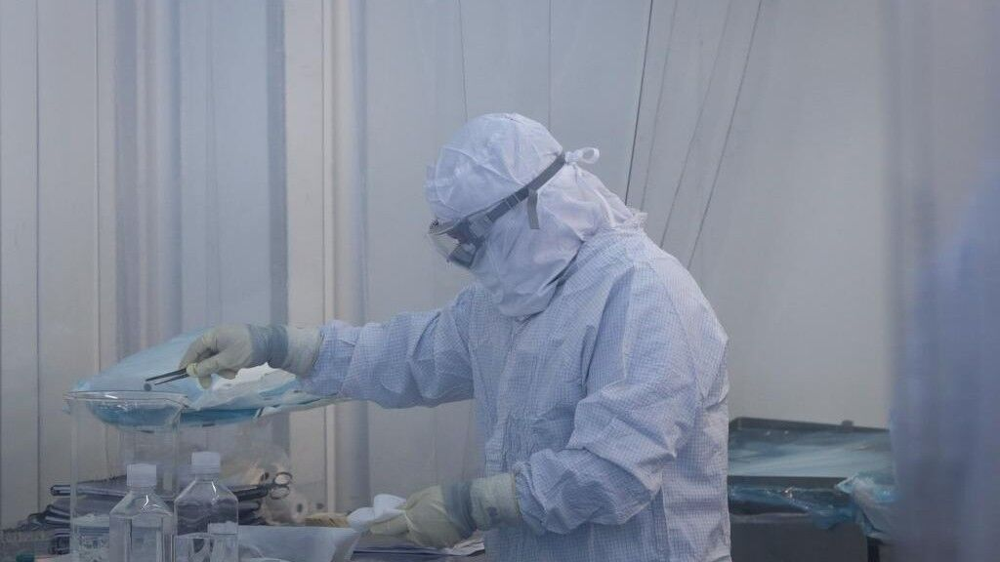

Colombia y la OMS corrigen a Madrid: No hay 'variante colombiana' sino 'investigación colombiana'

a Organización Panamericana de la Salud, y por extensión la OMS, a la que esta pertenece, han desmentido la existencia de una 'variante colombiana' del coronavirus, citada la pasada semana por el viceconsejero de Salud Pública y dirigente del plan anticoronavirus de la Comunidad de Madrid, Antonio Zapatero.El consejero de Sanidad en funciones, Enrique Ruiz-Escudero, aludió a 17 casos detectados de la citada 'variante', a que supone el '90% de casos detectados de la Comunidad de Madrid', y a 109 contagios desde marzo en personas procedentes de Colombia.También aludieron al escaso control que a su juicio hay en el Aeropuerto de Barajas, argumento que la Comunidad de Madrid esgrime desde hace meses.
Sin embargo, la OPS y la OMS sostienen que no hay variante colombiana de coronavirus, y lo señalado por la Comunidad de Madrid se trata de una variante que circula por Estados Unidos, México, Holanda, Dinamarca, Alemania, España y Colombia, entre otros países.Esta variante es la B1.621, y no una hipotética 'variante colombiana'.
Fernando Ruiz, ministro de Salud de Colombia, ha declarado que 'no existe una variante colombiana del coronavirus' y directamente ha aludido a Zapatero afirmando que 'que un país reporte una cepa no lo define como lugar de origen.Esas imprecisiones alimentan la xenofobia'.
El Instituto Nacional de la Salud de Colombia afirmó que fue en Colombia donde se indentificó la variante, de modo que no se trataría de ninguna variante nacida en Colombia sino 'de una investigación colombiana'.
Se trataría de un hecho análogo a la historia de la Gripe Española de 1918-20, en realidad estadounidense y 'atribuída' a España por ser el país qie informaba sobre ella sin censura, en el contexto de la I Guerra Mundil.
Posted On: 2021-06-06T13:19:00

Content Date: 2021-06-06
Download Date: 2021-09-16
Document ID: L0C04G9WM